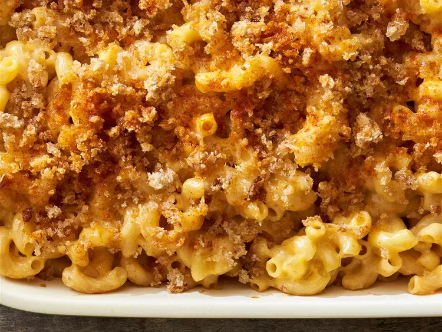

Homemade Mac and Cheese

Serves four
Ingredients
- 1 (16 ounce) package of macaroni
- 2 tablespoons of butter
- 2 cups of shredded low-fat Cheddar cheese
- 0.5 cup of grated parmesan cheese
- 3 cups of 1% fat milk (low fat)
- 2 tablespoons of butter
- 0.5 cup of bread crumbs
1 pinch of paprika
Directions
- Preheat oven to 350 degrees F (175 degrees C)
- Bring a large pot of (salted) water to boil
- Cook your macaroni in the boiling water for 8 minutes or until desires firmness, then drain
- Use a saucepan to melt 2 tablespoons of butter over medium heat
- Add and stir in flour to make a roux
- Add milk to your roux, stirring constantly
- Stir in the parmesand and cheddar and cook over low heat for 3 minutes
- Place macaroni in a baking dish then add your sauce over it, stirring well
- Melt 2 tablespoons of butter in a skillet over medium heat
- Add breadcrumbs, and stir until the butter is absorbed (will take 2-3 minutes)
- Spread your breadcrumbs over the macaroni, and sprinkle with paprike
- Bake in your preheated oven for about 30 minutes
- Enjoy! Your mac and cheese is ready to serve!
Return to homepage